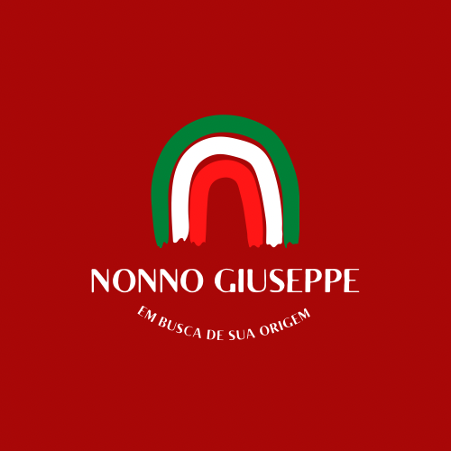

<mat-toolbar class="header">
  <button
    routerLink=""
    [ngClass]="{ destaque: botaoAtivo === '/' }"
    (click)="marcarBotao('/')"
  >
    
  </button>

  <span fxShow fxHide.gt-xs class="header--title">Nonno Giuseppe</span>

  <a
    routerLink=""
    [ngClass]="{ destaque: botaoAtivo === '/' }"
    (click)="marcarBotao('/')"
    >Home</a
  >
  <a
    routerLink="servicos"
    [ngClass]="{ destaque: botaoAtivo === '/servicos' }"
    (click)="marcarBotao('/servicos')"
    >Serviços</a
  >
  <a
    routerLink="pesquisa"
    [ngClass]="{ destaque: botaoAtivo === '/pesquisa' }"
    (click)="marcarBotao('/pesquisa')"
    >Pesquisa</a
  >
  <a
    routerLink="contato"
    [ngClass]="{ destaque: botaoAtivo === '/contato' }"
    (click)="marcarBotao('/contato')"
    >Contato</a
  >
</mat-toolbar>

<mat-sidenav-container>
  <mat-sidenav-content>
    <router-outlet></router-outlet>
    <app-bottom-menu></app-bottom-menu>
  </mat-sidenav-content>
</mat-sidenav-container>
